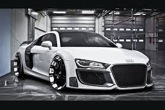

| Home | About us | Contact us | Subscribe us |
|---|
Audi From Wikipedia, the free encyclopedia Audi AG[1] Audi logo detail.svg Type Public, Aktiengesellschaft Traded as FWB: NSU Industry Automotive Founded Chemnitz, Germany (29 June 1932)[2] Founder(s) August Horch[2] Headquarters Ingolstadt, Germany Number of locations 11 production facilities in 9 countries[3] Area served Worldwide Key people
Rupert Stadler, Chairman of the Board of Management Wolfgang Egger, Head of Design Ulrich Hackenberg, Head of Technical Development Products Luxury cars Production output Increase 1,466,059 units (2012)[4] Revenue Increase €48.771 billion (2012) [5][4] Operating income Increase €5.380 billion (2012)[4] Profit Increase €4.353 billion (2012)[6] Total assets Increase €16.832 billion (2009) Total equity Increase €3.451 billion (2009) Owner(s) Volkswagen Group (99.55%)[7] Employees 68,804 (2012)[4] Subsidiaries Audi Brussels Audi Hungaria Motor Kft. Ducati Motor Holding S.p.A. Italdesign Giugiaro Automobile Lamborghini S.p.A quattro GmbH
References: Audi History: Chronicle,[8] 2011 Annual Financial Report[9] Audi head office in Ingolstadt Audi AG[1] (pronounced ['?a??di? ?a?'ge?] ( listen)) is a German automobile manufacturer that designs, engineers, produces, markets and distributes automobiles. Audi oversees worldwide operations from its headquarters in Ingolstadt, Bavaria, Germany. Audi-branded vehicles are produced in nine production facilities worldwide. Audi has been a majority owned (99.55%) subsidiary of Volkswagen Group since 1966, following a phased purchase of Audi AG's predecessor, Auto Union, from Daimler-Benz.[10] Volkswagen relaunched the Audi brand with the 1965 introduction of the Audi F103 series. The company name is based on the Latin translation of the surname of the founder, August Horch. "Horch", meaning "listen" in German, becomes "audi" in Latin. The four rings of the Audi logo each represent one of four car companies that banded together to create Audi's predecessor company, Auto Union. Audi's slogan is Vorsprung durch Technik, meaning "Advancement through Technology". Recently in the United States, Audi has updated the slogan to "Truth in Engineering". Audi is a member of the "German Big 3" luxury automakers, along with BMW and Mercedes-Benz, which are the three best-selling luxury automakers in the world.[11][12]
Contents 1 History 1.1 Birth of the company and its name 1.2 The merger of the four companies under the logo of four rings 1.3 Post-World War II 1.4 New Auto Union unit 1.5 Modern era 1.6 Audi 5000 unintended acceleration allegations 1.7 Model introductions 1.8 Audi AG today 2 Technology 2.1 Bodyshells 2.2 Space frame 2.3 Drivetrains 2.4 LED daytime running lights 2.5 Multi Media Interface 3 Models 3.1 Current model range 3.2 S and RS models 3.3 Electric vehicles 4 Production figures 5 Motorsport 5.1 Rallying 5.2 In the USA 5.3 Touring cars 5.4 24 Hours of Le Mans 5.5 American Le Mans Series 5.6 European Le Mans Series 5.7 World Endurance Championship 5.8 Formula E 6 Marketing 6.1 Branding 6.2 Sponsorships 6.3 Multitronic campaign 6.4 Audi TDI 6.5 Audi e-tron 6.6 In video games 7 See also 8 References 9 External links
Originally in 1885, automobile company Wanderer was established, later becoming a branch of Audi AG. Another company, NSU, which also later merged into Audi, was founded during this time, and later supplied the chassis for Gottlieb Daimler's four-wheeler.[13] On 14 November 1899, August Horch (1868–1951) established the company A. Horch & Cie. in the Ehrenfeld district of Cologne. Three years later in 1902 he moved with his company to Reichenbach im Vogtland. On May, 10th, 1904 he founded the August Horch & Cie. Motorwagenwerke AG, a joint-stock company in Zwickau (State of Saxony). After troubles with Horch chief financial officer, August Horch left Motorwagenwerke and founded in Zwickau on 16 July 1909, his second company, the August Horch Automobilwerke GmbH. His former partners sued him for trademark infringement. The German Reichsgericht (Supreme Court) in Leipzig,[14] eventually determined that the Horch brand belonged to his former company.[15] Audi Type E  Since August Horch was banned from using "Horch" as a trade name in his new car business, he called a meeting with close business friends, Paul and Franz Fikentscher from Zwickau, Germany. At the apartment of Franz Fikentscher, they discussed how to come up with a new name for the company. During this meeting, Franz's son was quietly studying Latin in a corner of the room. Several times he looked like he was on the verge of saying something but would just swallow his words and continue working, until he finally blurted out, "Father – audiatur et altera pars... wouldn't it be a good idea to call it audi instead of horch?"[16] "Horch!" in German means "Hark!" or "hear", which is "Audi" in the singular imperative form of "audire" – "to listen" – in Latin. The idea was enthusiastically accepted by everyone attending the meeting.[17] On 25 April 1910 the Audi Automobilwerke GmbH Zwickau (from 1915 on Audiwerke AG Zwickau) was entered in the company's register of Zwickau registration court. The first Audi automobile, the Audi Type A 10/22 hp (16 kW) Sport-Phaeton, was produced in the same year,[18] followed by the successor Type B 10/28PS in the same year.[19] Audi started with a 2,612 cc inline-four engine model Type A, followed by a 3,564 cc model, as well as 4,680 cc and 5,720 cc models. These cars were successful even in sporting events. The first six-cylinder model Type M, 4,655 cc appeared in 1924.[20] August Horch left the Audiwerke in 1920 for a high position at the ministry of transport, but he was still involved with Audi as a member of the board of trustees. In September 1921, Audi became the first German car manufacturer to present a production car, the Audi Type K, with left-handed drive.[21] Left-hand drive spread and established dominance during the 1920s because it provided a better view of oncoming traffic, making overtaking safer.[21] The merger of the four companies under the logo of four rings Main article: Auto Union In August 1928, Jørgen Rasmussen,the owner of Dampf-Kraft-Wagen (DKW), acquired the majority of shares in Audiwerke AG.[22] In the same year, Rasmussen bought the remains of the U.S. automobile manufacturer Rickenbacker, including the manufacturing equipment for eight-cylinder engines. These engines were used in Audi Zwickau and Audi Dresden models that were launched in 1929. At the same time, six-cylinder and four-cylinder (the "four" with a Peugeot engine) models were manufactured. Audi cars of that era were luxurious cars equipped with special bodywork. In 1932, Audi merged with Horch, DKW, and Wanderer, to form Auto Union AG, Chemnitz. It was during this period that the company offered the Audi Front that became the first European car to combine a six-cylinder engine with front-wheel drive. It used a powertrain shared with the Wanderer, but turned 180-degrees, so that the drive shaft faced the front. Before World War II, Auto Union used the four interlinked rings that make up the Audi badge today, representing these four brands. This badge was used, however, only on Auto Union racing cars in that period while the member companies used their own names and emblems. The technological development became more and more concentrated and some Audi models were propelled by Horch or Wanderer built engines. Reflecting the economic pressures of the time, Auto Union concentrated increasingly on smaller cars through the 1930s, so that by 1938 the company's DKW brand accounted for 17.9% of the German car market, while Audi held only 0.1%. After the final few Audis were delivered in 1939 the "Audi" name disappeared completely from the new car market for more than two decades. Post-World War II IFA F9
Like most German manufacturing, at the onset of World War II the Auto Union plants were retooled for military production, and were a target for allied bombing during the war which left them damaged. Overrun by the Soviet Army in 1945, on the orders of the Soviet Union military administration the factories were dismantled as part of war reparations.[23] Following this, the company's entire assets were expropriated without compensation.[23] On 17 August 1948, Auto Union AG of Chemnitz was deleted from the commercial register.[22] These actions had the effect of liquidating Germany's Auto Union AG. The remains of the Audi plant of Zwickau became the VEB (for "People Owned Enterprise") Automobilwerk Zwickau or AWZ (in English: Automobile Works Zwickau). The former Audi factory in Zwickau restarted assembly of the pre-war-models in 1949. These DKW models were renamed to IFA F8 and IFA F9 and were similar to the West German versions. West and East German models were equipped with the traditional and renowned DKW two-stroke engines. The Zwickau plant manufactured the infamous Trabant until 1991, when it came under Volkswagen control—effectively bringing it under the same umbrella as Audi since 1945. New Auto Union unit A new West German headquartered Auto Union was launched in Ingolstadt, Bavaria with loans from the Bavarian state government and Marshall Plan aid.[23] The reformed company was launched 3 September 1949 and continued DKW's tradition of producing front-wheel drive vehicles with two-stroke engines.[23] This included production of a small but sturdy 125 cc motorcycle and a DKW delivery van, the DKW F 89 L at Ingolstadt. The Ingolstadt site was large, consisting of an extensive complex of formerly military buildings which was suitable for administration as well as vehicle warehousing and distribution, but at this stage there was at Ingolstadt no dedicated plant suitable for mass production of automobiles: for manufacturing the company's first post-war mass-market passenger car plant capacity in Düsseldorf was rented from Rheinmetall-Borsig. It was only ten years later, after the company had attracted an investor that funds became available for construction of major car plant at the Ingolstadt head office site.In 1958, in response to pressure from Friedrich Flick, then their largest single shareholder,[24] Daimler-Benz took an 87% holding in the Auto Union company, and this was increased to a 100% holding in 1959. However, small two-stroke cars were not the focus of Daimler-Benz's interests, and while the early 1960s saw major investment in new Mercedes models and in a state of the art factory for Auto Union's, the company's aging model range at this time did not benefit from the economic boom of the early 1960s to the same extent as competitor manufacturers such as Volkswagen and Opel. The decision to dispose of the Auto Union business was based on its lack of profitability.[25] Ironically, by the time they sold the business, it also included a large new factory and near production-ready modern four-stroke engine, which would enable the Auto Union business, under a new owner, to embark on a period of profitable growth, now producing not Auto Unions or DKWs, but using the "Audi" name, resurrected in 1965 after a 25 year gap. Under the terms of the sale, Daimler-Benz retained the old Düsseldorf plant, which survives to the present day as a centre for Mercedes-Benz commercial vehicle assembly.
In 1964, Volkswagen acquired a 50% holding in the business, which included the new factory in Ingolstadt and the trademark rights of the Auto Union. Eighteen months later, Volkswagen bought complete control of Ingolstadt, and by 1966 were using the spare capacity of the Ingolstadt plant to assemble an additional 60,000 Volkswagen Beetles per year.[26] Two-stroke engines became less popular during the 1960s as customers were more attracted to the smoother four-stroke engines. In September 1965, the DKW F102 was fitted with a four-stroke engine and a facelift for the car's front and rear. Volkswagen dumped the DKW brand because of its associations with two-stroke technology, and having classified the model internally as the F103, sold it simply as the "Audi." Later developments of the model were named after their horsepower ratings and sold as the Audi 60, 75, 80, and Super 90, selling until 1972. Initially, Volkswagen was hostile to the idea of Auto Union as a standalone entity producing its own models having acquired the company merely to boost its own production capacity through the Ingolstadt assembly plant. Then VW chief Heinz Nordhoff explicitly forbade Auto Union from any further product development. Fearing that the company's heritage would disappear underneath VW badge engineering, Auto Union engineers under the leadership of Ludwig Kraus developed the first Audi 100 in secret, without Nordhoff's knowledge. When presented with a finished prototype, Nordhoff was so impressed he authorised the car for production, which when launched in 1968, went on to be a huge success. With this, the resurrection of the Audi brand was now complete, this being followed by the first generation Audi 80 in 1972, which would in turn provide a template for VW's new front-wheel-drive water-cooled range which debuted from the mid-1970s onward. Audi 80 assembly line in Wolfsburg, 1973
In 1969, Auto Union merged with NSU, based in Neckarsulm, near Stuttgart. In the 1950s, NSU had been the world's largest manufacturer of motorcycles, but had moved on to produce small cars like the NSU Prinz, the TT and TTS versions of which are still popular as vintage race cars. NSU then focused on new rotary engines based on the ideas of Felix Wankel. In 1967, the new NSU Ro 80 was a car well ahead of its time in technical details such as aerodynamics, light weight, and safety. However, teething problems with the rotary engines put an end to the independence of NSU. The Neckarsulm plant is now used to produce the larger Audi models A6 and A8. The Neckarsulm factory is also home of the quattro GmbH, a subsidiary responsible for development and production of Audi high-performance models: the R8 and the "RS" model range. The mid-sized car that NSU had been working on, the K70, was intended to slot between the rear-engined Prinz models and the futuristic NSU Ro 80. However, Volkswagen took the K70 for its own range, spelling the end of NSU as a separate brand. Modern era
The new merged company was known as Audi NSU Auto Union AG, and saw the emergence of Audi as a separate brand for the first time since the pre-war era. Volkswagen introduced the Audi brand to the United States for the 1970 model year. The first new car of this regime was the Audi 100 of 1968. This was soon joined by the Audi 80/Fox (which formed the basis for the 1973 Volkswagen Passat) in 1972 and the Audi 50 (later rebadged as the Volkswagen Polo) in 1974. The Audi 50 was a seminal design because it was the first incarnation of the Golf/Polo concept, one that led to a hugely successful world car. The Audi image at this time was a conservative one, and so, a proposal from chassis engineer Jörg Bensinger[27] was accepted to develop the four-wheel drive technology in Volkswagen's Iltis military vehicle for an Audi performance car and rally racing car. The performance car, introduced in 1980, was named the "Audi Quattro", a turbocharged coupé which was also the first German large-scale production vehicle to feature permanent all-wheel drive through a centre differential. Commonly referred to as the "Ur-Quattro" (the "Ur-" prefix is a German augmentative used, in this case, to mean "original" and is also applied to the first generation of Audi's S4 and S6 Sport Saloons, as in "UrS4" and "UrS6"), few of these vehicles were produced (all hand-built by a single team), but the model was a great success in rallying. Prominent wins proved the viability of all-wheel drive racecars, and the Audi name became associated with advances in automotive technology. In 1985, with the Auto Union and NSU brands effectively dead, the company's official name was now shortened to simply Audi AG. Audi Quattro
In 1986, as the Passat-based Audi 80 was beginning to develop a kind of "grandfather's car" image, the type 89 was introduced. This completely new development sold extremely well. However, its modern and dynamic exterior belied the low performance of its base engine, and its base package was quite spartan (even the passenger-side mirror was an option.) In 1987, Audi put forward a new and very elegant Audi 90, which had a much superior set of standard features. In the early 1990s, sales began to slump for the Audi 80 series, and some basic construction problems started to surface. In the early part of the 21st century, Audi set forth on a German racetrack to claim and maintain several world records, such as top speed endurance. This effort was in-line with the company's heritage from the 1930s racing era Silver Arrows. Through the early 1990s, Audi began to shift its target market upscale to compete against German automakers Mercedes-Benz and BMW. This began with the release of the Audi V8 in 1990. It was essentially a new engine fitted to the Audi 100/200, but with noticeable bodywork differences. Most obvious was the new grille that was now incorporated in the bonnet. By 1991, Audi had the four-cylinder Audi 80, the 5-cylinder Audi 90 and Audi 100, the turbocharged Audi 200 and the Audi V8. There was also a coupe version of the 80/90 with both 4- and 5-cylinder engines. Although the five-cylinder engine was a successful and robust powerplant, it was still a little too different for the target market. With the introduction of an all-new Audi 100 in 1992, Audi introduced a 2.8L V6 engine. This engine was also fitted to a face-lifted Audi 80 (all 80 and 90 models were now badged 80 except for the USA), giving this model a choice of four-, five-, and six-cylinder engines, in Saloon, Coupé and Cabriolet body styles. The five-cylinder was soon dropped as a major engine choice; however, a turbocharged 230 hp (170 kW) version remained. The engine, initially fitted to the 200 quattro 20V of 1991, was a derivative of the engine fitted to the Sport Quattro. It was fitted to the Audi Coupé, and named the S2 and also to the Audi 100 body, and named the S4. These two models were the beginning of the mass-produced S series of performance cars. Audi 5000 unintended acceleration allegations Sales in the United States fell after a series of recalls from 1982 to 1987 of Audi 5000 models[28] associated with reported incidents of sudden unintended acceleration linked to six deaths and 700 accidents.[28] At the time, NHTSA was investigating 50 car models from 20 manufacturers for sudden surges of power.[29] A 60 Minutes report aired 23 November 1986,[30] featuring interviews with six people who had sued Audi after reporting unintended acceleration, showing an Audi 5000 ostensibly suffering a problem when the brake pedal was pushed.[31][32] Subsequent investigation revealed that 60 Minutes had engineered the failure – fitting a canister of compressed air on the passenger-side floor, linked via a hose to a hole drilled into the transmission.[30] Audi 100 C3, sold as the Audi 5000 in the U.S. Audi contended, prior to findings by outside investigators,[29] that the problems were caused by driver error, specifically pedal misapplication.[29] Subsequently, the National Highway Traffic Safety Administration (NHTSA) concluded that the majority of unintended acceleration cases, including all the ones that prompted the 60 Minutes report, were caused by driver error such as confusion of pedals.[33] CBS did not acknowledge the test results of involved government agencies, but did acknowledge the similar results of another study.[31] In a review study published in 2012, NHTSA summarized its past findings about the Audi unintended acceleration problems: "Once an unintended acceleration had begun, in the Audi 5000, due to a failure in the idle-stabilizer system (producing an initial acceleration of 0.3g), pedal misapplication resulting from panic, confusion, or unfamiliarity with the Audi 5000 contributed to the severity of the incident."[34] This summary is consistent with the conclusions of NHTSA's most technical analysis at the time: "Audi idle-stabilization systems were prone to defects which resulted in excessive idle speeds and brief unanticipated accelerations of up to 0.3g [which is similar in magnitude to an emergency stop in a subway car]. These accelerations could not be the sole cause of [(long-duration) sudden acceleration incidents (SAI)], but might have triggered some SAIs by startling the driver.[35] The defective idle-stabilization system performed a type of electronic throttle control. Significantly: multiple "intermittent malfunctions of the electronic control unit were observed and recorded ... and [were also observed and] reported by Transport Canada."[35] With a series of recall campaigns, Audi made several modifications; the first adjusted the distance between the brake and accelerator pedal on automatic-transmission models.[28] Later repairs, of 250,000 cars dating back to 1978, added a device requiring the driver to press the brake pedal before shifting out of park.[28] A legacy of the Audi 5000 and other reported cases of sudden unintended acceleration are intricate gear stick patterns and brake interlock mechanisms to prevent inadvertent shifting into forward or reverse. It is unclear how the defects in the idle-stabilization system were addressed.
Audi's U.S. sales, which had reached 74,061 in 1985, dropped to 12,283 in 1991 and remained level for three years.[28] – with resale values falling dramatically.[36] Audi subsequently offered increased warranty protection[36] and renamed the affected models – with the 5000 becoming the 100 and 200 in 1989[29] – and only reached the same sales levels again by model year 2000.[28] A 2010 BusinessWeek article – outlining possible parallels between Audi's experience and 2009–2010 Toyota vehicle recalls – noted a class-action lawsuit filed in 1987 by about 7,500 Audi 5000-model owners remains unsettled and is currently being contested in county court in Chicago after appeals at the Illinois state and U.S. federal levels.[28] Model introductions Audi TT In the mid-to-late 1990s, Audi introduced new technologies including the use of aluminum construction. Produced from 1999 to 2005, the Audi A2 was a futuristic super mini, born from the Al2 concept, with many features that helped regain consumer confidence, like the aluminium space frame, which was a first in production car design. In the A2 Audi further expanded their TDI technology through the use of frugal three-cylinder engines. The A2 was extremely aerodynamic and was designed around a wind tunnel. The Audi A2 was criticised for its high price and was never really a sales success but it planted Audi as a cutting-edge manufacturer. The model, a Mercedes-Benz A-Class competitor, sold relatively well in Europe. However, the A2 was discontinued in 2005 and Audi decided not to develop an immediate replacement.
The next major model change came in 1995 when the Audi A4 replaced the Audi 80. The new nomenclature scheme was applied to the Audi 100 to become the Audi A6 (with a minor facelift). This also meant the S4 became the S6 and a new S4 was introduced in the A4 body. The S2 was discontinued. The Audi Cabriolet continued on (based on the Audi 80 platform) until 1999, gaining the engine upgrades along the way. A new A3 hatchback model (sharing the Volkswagen Golf Mk4's platform) was introduced to the range in 1996, and the radical Audi TT coupé and roadster were debuted in 1998 based on the same underpinnings. The engines available throughout the range were now a 1.4 L, 1.6 L and 1.8 L four-cylinder, 1.8 L four-cylinder turbo, 2.6 L and 2.8 L V6, 2.2 L turbo-charged five-cylinder and the 4.2 L V8 engine. The V6s were replaced by new 2.4 L and 2.8 L 30V V6s in 1998, with marked improvement in power, torque and smoothness. Further engines were added along the way, including a 3.7 L V8 and 6.0 L W12 engine for the A8. Audi AG today Audi Q7 Audi's sales grew strongly in the 2000s, with deliveries to customers increasing from 653,000 in 2000 to 1,003,000 in 2008. The largest sales increases came from Eastern Europe (+19.3%), Africa (+17.2%) and the Middle East (+58.5%). China in particular has become a key market, representing 108,000 out of 705,000 cars delivered in the first three quarters of 2009. One factor for its popularity in China is that Audis have become the car of choice for purchase by the Chinese government for officials, and purchases by the government are responsible for 20% of its sales in China.[37] As of late 2009, Audi's operating profit of €1.17-billion ($1.85-billion) made it the biggest contributor to parent Volkswagen Group's nine-month operating profit of €1.5-billion, while the other marques in Group such as Bentley and SEAT had suffered considerable losses.[38] May 2011 saw record sales for Audi of America with the new Audi A7 and Audi A3 TDI Clean Diesel.[39] In May 2012, Audi reported a 10% increase in its sales—from 408 units to 480 in the last year alone.[40] Audi manufactures vehicles in seven plants around the world, some of which are shared with other VW Group marques[41] although many sub-assemblies such as engines and transmissions are manufactured within other Volkswagen Group plants. Audi's two principal assembly plants are: Ingolstadt, Opened by Auto Union in 1964, (A3, A4, A5, Q5) Neckarsulm, Acquired from NSU in 1969 (A4, A6, A7, A8, R8 & all RS variants) Outside of Germany, Audi produces vehicles at: Aurangabad, India since 2006 Bratislava, Slovakia, shared with Volkswagen, SEAT, Škoda and Porsche (Q7) Brussels, Belgium, acquired from Volkswagen in 2007 (A1) Changchun, China since 1995 Gyor, Hungary, (TT and some A3 variants) Jakarta, Indonesia since 2011 Martorell, Spain shared with SEAT and Volkswagen (Q3) In September 2012, Audi announced the construction of its first North American manufacturing plant in Puebla, Mexico. This plant is expected to be operative in 2016 and produce the second generation Q5.[42] From 2002 up to 2003, Audi headed the Audi Brand Group, a subdivision of the Volkswagen Group's Automotive Division consisting of Audi, Lamborghini and SEAT, that was focused on sporty values, with the marques' product vehicles and performance being under the higher responsibility of the Audi brand. In 2014 Audi UK falsely claimed that the Audi A7, A8, and R8 were Euro NCAP safety tested, all achieving five out of five stars. In fact none were tested.[43] Technology Bodyshells Audi produces 100% galvanised cars to prevent corrosion,[44] and was the first mass-market vehicle to do so, following introduction of the process by Porsche, c.1975. Along with other precautionary measures, the full-body zinc coating has proved to be very effective in preventing rust. The body's resulting durability even surpassed Audi's own expectations, causing the manufacturer to extend its original 10-year warranty against corrosion perforation to currently 12 years (except for aluminium bodies which do not rust).[45] Space frame The Audi R8 uses Audi Space Frame technology Audi introduced a new series of vehicles in the mid-1990s and continues to pursue new technology and high performance. An all-aluminium car was brought forward by Audi, and in 1994 the Audi A8 was launched, which introduced aluminium space frame technology (called Audi Space Frame or ASF) which saves weight and improves torsion rigidity compared to a conventional steel frame. Prior to that effort, Audi used examples of the Type 44 chassis fabricated out of aluminium as test-beds for the technique. The disadvantage of the aluminium frame is that it is very expensive to repair and requires a specialized aluminium bodyshop.[46] The weight reduction is somewhat offset by the quattro four-wheel drive system which is standard in most markets. Nonetheless, the A8 is usually the lightest all-wheel drive car in the full-size luxury segment, also having best-in-class fuel economy.[47] The Audi A2, Audi TT and Audi R8 also use Audi Space Frame designs. Drivetrains Layout Audi A4For most of its lineup (excluding the A3, A1, and TT models), Audi has not adopted the transverse engine layout which is typically found in economy cars (such as Peugeot and Citroën), since that would limit the type and power of engines that can be installed. In order to be able to mount powerful engines (such as a V8 engine in the Audi S4 and Audi RS4, as well as the W12 engine in the Audi A8L W12), Audi has usually engineered its more expensive cars with a longitudinally front-mounted engine, in an "overhung" position, over the front wheels in front of the axle line. While this allows for the easy adoption of all-wheel drive, it goes against the
| Model | Price |
|---|---|
| Audi Q3 | 31.51 lakh |
| Audi A4 | 53.17 lakh |
| Audi A6 | 53.42 lakh |
| Audi Q5 | 57.32 lakh |
| Audi TT | 54.59 lakh |
| Audi Q7 | 77.18 lakh |
| Audi A7 | 85.88 lakh |
| Audi RS5 | 1.01 crores |
| Audi A8 L | 1.13 crores |
| Audi RS7 Sprotback | 1.31 crores |
| Audi R8 | 2.24 crores |